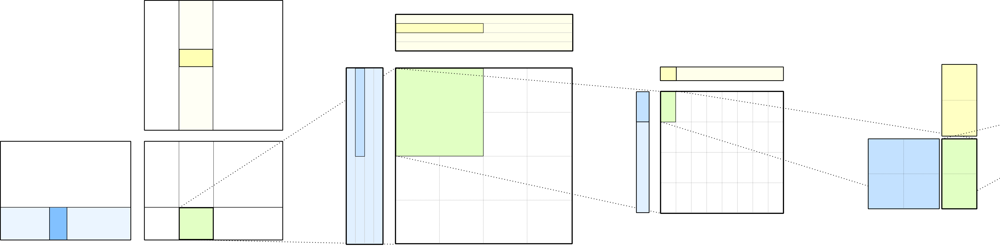
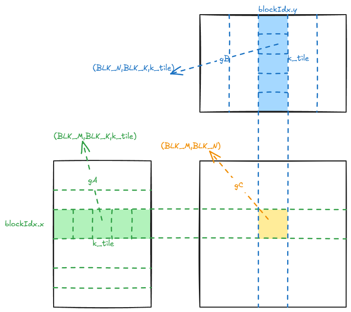

Overview
本文分析基于Ampere架构的dense HGEMM。

从流程上来讲，使用CuTe编写的代码和Raw CUDA进行的HGEMM没有本质区别，也没有用到全新的优化方式，仍然是SM80优化的那一套。CuTe把曾经几乎没有可读性的，复杂的坐标计算重构为了CuTe的Tensor分块和切片，操作tensor的每个函数都有明确的语义。本文会重点解释参与运算的矩阵是如何被TiledMMA和TiledCopy重新组织，分块和切片的，而不是讲解如何在SM80上面优化一个HGEMM，较为基础的优化部分本文会略过。本文代码基于CuTe Tutorial。
本文会按照GEMM tiling的顺序进行讲解。本文会使用d表示动态整数，s表示静态整数。
function calling structure
1int main(){//初始化参数，parsing，profiling
2 gemm_tn(){// warpper，实例化TiledMMA，TiledCopy等，并且launch kernel
3 gemm_device() // device kernel，处理核心逻辑（Tiling，Copy，Compute）
4 }
5}
我们在行文时会用gemm_tn()和 gemm_device()来区分代码处在的层级。
gemm_device() signature
1template <class ProblemShape, class CtaTiler,
2 class TA, class AStride, class ASmemLayout, class TiledCopyA, class S2RAtomA,
3 class TB, class BStride, class BSmemLayout, class TiledCopyB, class S2RAtomB,
4 class TC, class CStride, class CSmemLayout, class TiledMma,
5 class Alpha, class Beta>
6__global__ static
7__launch_bounds__(decltype(size(TiledMma{}))::value)
8void
9gemm_device(ProblemShape shape_MNK, CtaTiler cta_tiler,
10 TA const* A, AStride dA, ASmemLayout sA_layout, TiledCopyA copy_a, S2RAtomA s2r_atom_a,
11 TB const* B, BStride dB, BSmemLayout sB_layout, TiledCopyB copy_b, S2RAtomB s2r_atom_b,
12 TC * C, CStride dC, CSmemLayout , TiledMma mma,
13 Alpha alpha, Beta beta)
其中一些参数的含义和类型如下：
-
ProblemShape矩阵乘法的形状，直接使用make_shape(m,n,k)封装了三个dynamic int。本文使用d5120，d5120，d4096 -
CtaTiler每个CTA(block)处理的形状，有的教程里面也叫 CTA tile，静态layout。本文使用128，128，64 -
ASmemLayout, BSmemLayout, CSmemLayoutShared Memory的layout，静态layout。 -
TiledCopyandTiledMMACopy和MMA的形状和TV layout，静态。 -
S2RAtom从Shared Memory搬运到Register时用的CopyAtom，本代码中用的是ldmatrix。
gemm_tn() signature
1template <class Alpha, class Beta>
2void
3gemm_tn(int m, int n, int k,
4 Alpha alpha,
5 cute::half_t const* A, int ldA,
6 cute::half_t const* B, int ldB,
7 Beta beta,
8 cute::half_t * C, int ldC,
9 cudaStream_t stream = 0)
值得吐槽的是，作者至今未理解为什么alpha和beta类型要用泛型表示，感觉完全没有意义…
CuTe variable naming convention
CuTe和CUTLASS的GEMM代码变量名有自己的规范。这些变量名表示Tensor所在的数据层级、采用的线程partition以及GEMM operand。
没有经过线程partition的Tensor：
| 形式 | 含义 | 本文中的例子 |
|---|---|---|
mX |
完整matrix的Tensor视图 | mA表示完整的A矩阵 |
gX |
从matrix中切出的global-memory tile | gA表示当前CTA看到的A tile |
sX |
shared-memory Tensor | sA表示shared memory中的A tile |
rX |
register fragment | rA表示寄存器中的A fragment |
最后的大写X通常是A、B或C，表示这个Tensor属于哪个GEMM operand。
经过线程partition之后，常见形式是tXgY。左边的tX表示使用哪套thread partitioning pattern，右边的gY表示被partition的Tensor。本文中的tA和tB表示A/B的ThrCopy，tC表示ThrMMA。tX表示s2r copy。
| 变量 | 拆分 | 含义 |
|---|---|---|
tAgA |
tA + gA |
用A的GMEM-to-SMEM copy线程布局partition global-memory A tile |
tAsA |
tA + sA |
用同一个tA布局partition shared-memory A tile |
tBsB |
tB + sB |
用B的copy线程布局partition shared-memory B tile |
tCgC |
tC + gC |
用MMA线程布局partition global-memory C tile |
tCrA |
tC + rA |
MMA线程看到的register A fragment |
tCrC |
tC + rC |
MMA线程看到的register C accumulator |
tXsA |
tX + sA |
用SMEM-to-RMEM Copy的辅助布局partition shared-memory A |
tXrA |
tX + rA |
同一个tX布局看到的register A fragment |
HGEMM
接下来我们按照数据在各个层级的内存之间流动的顺序来讲解HGEMM。
GMEM->SMEM
CTA Tiling
我们先建立整个tensor的视图。
1Tensor mA = make_tensor(make_gmem_ptr(A),select<0,2>(shape_MNK), dA); // (M,K)
2Tensor mB = make_tensor(make_gmem_ptr(B),select<1,2>(shape_MNK), dB); // (N,K)
3Tensor mC = make_tensor(make_gmem_ptr(C),select<0,1>(shape_MNK), dC); // (M,N)
我们处理的是一个tn形状的gemm，dA/dB/dC 是Stride，定义在gemm_tn()中
1auto dA = make_stride(ldA, Int<1>{}); // (dM, dK)
2auto dB = make_stride(ldB, Int<1>{}); // (dN, dK)
3auto dC = make_stride(Int<1>{}, ldC); // (dM, dN)
接下来我们使用CtaTiler来选出这个CTA要处理的CTA tile
1auto cta_coord = make_coord(blockIdx.x, blockIdx.y, _); // (m,n,k)
2Tensor gA = local_tile(mA, cta_tiler, cta_coord, Step<_1, X,_1>{}); // (BLK_M,BLK_K,k)
3Tensor gB = local_tile(mB, cta_tiler, cta_coord, Step< X,_1,_1>{}); // (BLK_N,BLK_K,k)
4Tensor gC = local_tile(mC, cta_tiler, cta_coord, Step<_1,_1, X>{}); // (BLK_M,BLK_N)

cta_tiler有M/N/K三个mode，但A、B、C都只使用两个mode。Step描述目标Tensor的mode使用tiler中的哪些mode，其中X表示该tiler mode不参与这个Tensor。A与N无关，所以同一个blockIdx.x下，不同blockIdx.y的CTA会读取相同的A区域；B则相反。这正是GEMM的正常数据复用关系。
Shared Memory Buffer
1template <class ElementA,class ElementB,class SmemLayoutA,class SmemLayoutB>
2struct SharedStorage
3{
4 cute::ArrayEngine<ElementA, cute::cosize_v<SmemLayoutA>> A;
5 cute::ArrayEngine<ElementB, cute::cosize_v<SmemLayoutB>> B;
6};
1extern __shared__ char shared_memory[];
2using SharedStorage = SharedStorage<TA, TB, ASmemLayout, BSmemLayout>;
3SharedStorage& smem = *reinterpret_cast<SharedStorage*>(shared_memory);
4Tensor sA = make_tensor(make_smem_ptr(smem.A.begin()), sA_layout); // (BLK_M,BLK_K,PIPE)
5Tensor sB = make_tensor(make_smem_ptr(smem.B.begin()), sB_layout); // (BLK_N,BLK_K,PIPE)
其中 sA_layout sB_layout定义在gemm_tn()中
1auto swizzle_atom = composition(Swizzle<3,3,3>{},
2 Layout<Shape <_8,Shape <_8, _8>>,
3 Stride<_8,Stride<_1,_64>>>{} );
4auto sA = tile_to_shape(swizzle_atom, make_shape(bM,bK,bP));
5auto sB = tile_to_shape(swizzle_atom, make_shape(bN,bK,bP));
6auto sC = make_layout(make_shape(bM, bN));
这里使用了swizzle来防止bank conflict。
Tiling
TiledCopy定义在gemm_tn()中
1TiledCopy copyA = make_tiled_copy(
2 Copy_Atom<SM80_CP_ASYNC_CACHEALWAYS<uint128_t>, half_t>{},
3 Layout<Shape<_16,_8>,Stride<_8,_1>>{},
4 Layout<Shape< _1,_8>>{});
5TiledCopy copyB = ... // same as copyA
在gemm_device()中，我们取出当前线程负责的slice
1ThrCopy thr_copy_a = copy_a.get_slice(threadIdx.x);
2Tensor tAgA = thr_copy_a.partition_S(gA);
3// (CPY,CPY_M,CPY_K,k) ((_8,_1),_8,_1,64)
4Tensor tAsA = thr_copy_a.partition_D(sA);
5// (CPY,CPY_M,CPY_K,PIPE) ((_8,_1),_8,_1,(_1,_3))
这里mode-0是CPY，这个维度包含了一次copy PTX能搬运的元素，我们使用128b的copy.async搬运half，每次可以搬运8个，所以得到CPY(_8,_1)。
mode-1和mode-2表示Copy需要重复的次数，CTA的A tile是128 x 64,TiledCopy是16 x 64，所以这个copy tile还要沿M方向重复8次，沿K方向重复1次。得到 _8,_1。k和gA中的k完全相同，我们传入Kd4096，bK取s64，这里就得到d64。
SMEM->Register
TiledMMA tiling
1TiledMMA mmaC = make_tiled_mma(
2 SM80_16x8x16_F16F16F16F16_TN{},
3 Layout<Shape<_2,_2>>{},
4 Tile<_32,_32,_16>{});
最底层MMA Atom的shape是16 x 8 x 16，由一个32线程warp执行。这里128个线程单次覆盖实际tile32 x 16 x 16，代码重新组织逻辑tile为32 x 32 x 16。这里是如何组织的在MmaAtom已经详细讲解过了。
我们要根据MMA的Shape划分gC，并且创建MMA fragment。
1ThrMMA thr_mma = mma.get_slice(threadIdx.x);
2Tensor tCgC = thr_mma.partition_C(gC);
3// (MMA,MMA_M,MMA_N) ((_2,_2),_4,(_2,_4))
这里使用ThrMMA去切分gC，得到gC的分块方式。mode-0表示MMA内部的Layout。mode-1和2表示TiledMMA在gC上的排列方式，bM是128，容纳4个TiledMMA实际tile。bN是128，容纳8个TiledMMA实际tile，但是我们对N进行了重排，实际组织为(_2,_4)。
1Tensor tCrA = thr_mma.partition_fragment_A(sA(_,_,0));
2Tensor tCrB = thr_mma.partition_fragment_B(sB(_,_,0));
3Tensor tCrC = thr_mma.make_fragment_C(tCgC);
这里我们创建mma fragment，sA(_,_,0)和sB(_,_,0)中的0只是表示第一个pipe的二维shape来创建fragment。partition_fragment_A/B在这里创建的是线程私有register fragment，之后会从任意pipe向其中填数据，并不意味着A/B永远读取pipe 0。
Copy Atom retiling
从SMEM->Register我们使用ldmatrix进行搬运，所以这里就出现了第二套映射。mma和ldmatrix处理的是同一批逻辑元素，但其tiling方式并不相同。 这里使用的Atom是：
1Copy_Atom<SM75_U32x4_LDSM_N, half_t> s2r_atom_A;
它对应ldmatrix.x4风格的shared-to-register加载。
代码用make_tiled_copy_A把LDSM Copy Atom适配到既有TiledMMA：
1TiledCopy s2r_copy_a = make_tiled_copy_A(s2r_atom_a, mma);
2ThrCopy s2r_thr_copy_a = s2r_copy_a.get_slice(threadIdx.x);
3
4Tensor tXsA = s2r_thr_copy_a.partition_S(sA);// (CPY,MMA_M,MMA_K,PIPE)
5Tensor tXrA = s2r_thr_copy_a.retile_D(tCrA);// (CPY,MMA_M,MMA_K)
retile_D(tCrA)则很关键：它不会新建一份register，也不会移动数据，而是为tCrA的同一Engine建立一个适合Copy destination的Layout视图。
copy按照tX*视图把数据写入register；随后的gemm按照tC*视图读取相同register。Retile的本质是协调两套Layout，而不是一次额外的数据重排。
Pipelined main loop
前面建立的Tensor包含所有K tile、所有SMEM pipe和所有register K block。主循环每一时刻只操作其中一个切片。
Prefetch to shared memory
1auto K_PIPE_MAX = size<3>(tAsA); //s3
2int k_tile_count = size<3>(tAgA);//d64
3int k_tile_next = 0;
4CUTE_UNROLL
5for (int k_pipe = 0; k_pipe < K_PIPE_MAX-1; ++k_pipe) { // prefetch 2 k_tiles
6 copy(copy_a, tAgA(_,_,_,k_tile_next), tAsA(_,_,_,k_pipe));
7 copy(copy_b, tBgB(_,_,_,k_tile_next), tBsB(_,_,_,k_pipe));
8 cp_async_fence();
9 --k_tile_count;
10 if (k_tile_count > 0) { ++k_tile_next; }
11}
做了两次Tensor slicing：
1tAgA(_,_,_,k_tile_next) 固定global K tile，保留当前线程的所有copy value
2tAsA(_,_,_,k_pipe) 固定SMEM pipeline stage，保留对应的所有目标位置
两侧得到相同的逻辑shape(CPY,CPY_M,CPY_K)，所以一次copy就能表达当前线程从一个global K tile到一个shared memory stage的全部搬运。
Prefetch to Register
在切分tXsA时我们在K维度上切出了4份，我们在K维度上进行pipeline。
1// Current pipe index in smem to read from
2int smem_pipe_read = 0;
3// Current pipe index in smem to write to
4int smem_pipe_write = K_PIPE_MAX-1;
5
6// Pipe slice
7Tensor tXsA_p = tXsA(_,_,_,smem_pipe_read);
8Tensor tXsB_p = tXsB(_,_,_,smem_pipe_read);
9
10// Size of the register pipeline
11auto K_BLOCK_MAX = size<2>(tCrA);
12CUTE_STATIC_ASSERT_V(K_BLOCK_MAX == size<2>(tXrA));
13
14// PREFETCH register pipeline
15if (K_BLOCK_MAX > 1) {
16// Wait until our first prefetched tile is loaded in
17cp_async_wait<K_PIPE_MAX-2>();
18__syncthreads();
19
20// Prefetch the first rmem from the first k-tile
21copy(s2r_atom_a, tXsA_p(_,_,Int<0>{}), tXrA(_,_,Int<0>{}));
22copy(s2r_atom_b, tXsB_p(_,_,Int<0>{}), tXrB(_,_,Int<0>{}));
23}
main loop
主循环伪代码如下：
1while(k_tile_count > -(K_PIPE_MAX-1)){//loop along K on SMEM
2 cp_async_wait<K_PIPE_MAX-2>(); // 2 SMEM block on the flight
3 for (int k_block = 0; k_block < K_BLOCK_MAX; ++k_block)//loop along bK on Register
4 {
5 // Load A, B shmem->regs for k_block+1
6 auto k_block_next = (k_block + Int<1>{}) % K_BLOCK_MAX; // static
7 copy(s2r_atom_a, tXsA_p(_,_,k_block_next), tXrA(_,_,k_block_next));
8 copy(s2r_atom_b, tXsB_p(_,_,k_block_next), tXrB(_,_,k_block_next));
9 gemm();
10 }
11 // load bK tiles
12 copy(copy_a, tAgA(_,_,_,k_tile_next), tAsA(_,_,_,smem_pipe_write));
13 copy(copy_b, tBgB(_,_,_,k_tile_next), tBsB(_,_,_,smem_pipe_write));
14}
外层循环在K上循环，从global memory预取到shared memory，这部分是真正硬件异步的。内层在k_block上循环，即mma内部，从shared memory预取到register。ldmatrix是阻塞的，我们在这里利用软件流水复用SM单元，在warp0 ldmatrix被阻塞时，warp1可以发射mma指令，如此保证Tensor Core永远处于活跃状态。
Epilogue
在计算完成之后，结果还储存在tCrC中，这里我们使用cute的tensor algorithm axpby。
1axpby(alpha, tCrC, beta, tCgC);
tCrC和tCgC具有相同的逻辑输出shape，但Engine分别位于register和global memory。axpby逐元素完成：
1tCgC = alpha * tCrC + beta * tCgC
这个例子的epilogue直接会把fragment写回gC。
从一个CTA的视角串起整个过程
假设blockIdx = (bm,bn)，可以把一个CTA的执行过程概括为：
local_tile固定M/N tile坐标，得到gA(128,64,k)、gB(128,64,k)和gC(128,128)；copyA/copyB.get_slice(tid)固定copy线程坐标，partition_S/D留下每线程的value与外层重复坐标；- 前两个global K tile通过
cp.async进入三个SMEM stage中的前两个； mma.get_slice(tid)固定warp和lane坐标，建立该线程的A/B/C MMA fragment；make_tiled_copy_A/B为相同A/B fragment建立LDSM视图，retile_D让Copy和MMA共享同一批register；- 每个SMEM stage再切成4个
k_block，一边加载下一个block，一边计算当前block； - 处理一个stage时，同时把后续global K tile写进空闲stage；
- 所有K tile归约完成后，
axpby把register accumulator写回当前线程的gC切片。
贯穿整个过程，真正的数据搬运只有三处：
1copy(copy_a/copy_b) GMEM -> SMEM
2copy(s2r_atom_a/b) SMEM -> RMEM
3axpby RMEM -> GMEM
总结
这段GEMM可以看成四次坐标分解：
1Problem MNK
2 -> CTA tile (128,128,64) x CTA coordinate
3 -> Thread-Value partition x copy/MMA outer repeat
4 -> SMEM PIPE stage
5 -> Register MMA_K block (16)
Tiling负责建立这些层级，partitioning负责把层级映射到线程，slicing负责在某一时刻固定CTA、thread、pipe或K block坐标。CuTe没有让程序员手算地址，而是把每一步都表达成Tensor Layout变换，再让copy和gemm在分割好的Tensor上面进行搬运和计算。
理解这套代码时，可以始终问三个问题：
- 这个Tensor的Engine现在指向GMEM、SMEM还是线程私有register？
- 每个mode是元素坐标、外层tile坐标、线程内value坐标，还是pipeline坐标？
- 当前语句是在构造视图，还是在真正搬运/计算数据？
只要这三个问题有明确答案，像tAgA(_,_,_,k_tile_next)、tXsA_p(_,_,k_block_next)这样的表达式就不再是一串下划线，而是在精确地描述“哪一个线程、在哪一级tile、操作哪一段数据”。